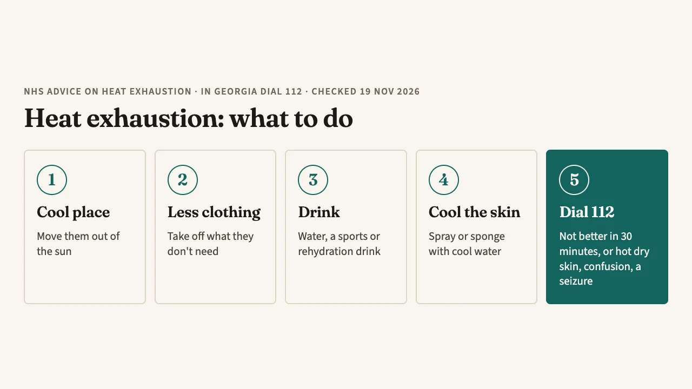
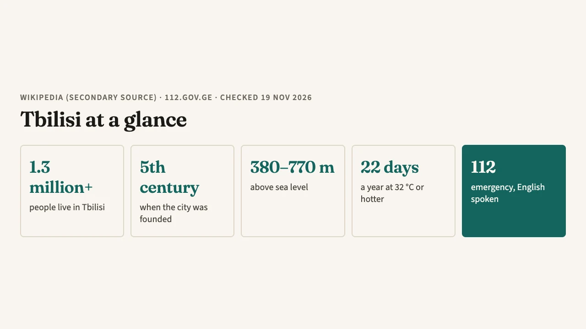

- Population
- 1.3 million+
- Founded
- 5th century
- Height above sea level
- 380–770 m
- Days at 32 °C+
- 22 a year
- Emergency
- 112
This page is about Tbilisi, the capital of Georgia the country. Checked on 19 November 2026.
Things to do in Tbilisi: the main sights
Most of the Tbilisi sights sit in and around the old town by the river. Mtatsminda Park looks down on them from the highest point of the city.
The city. According to Wikipedia, the capital and largest city of Georgia stands on the banks of the Kura River. Locally the river is called the Mtkvari. More than 1.3 million people live here, almost a third of the country's population. Vakhtang I of Iberia founded the city in the 5th century.
The name. The city's name comes from the Old Georgian word tpili, "warm". It means "the place of warmth", after the area's many sulfuric hot springs. Until 1936, English speakers called the city Tiflis.
The shape. The elevation ranges from 380–770 metres above sea level. Wikipedia describes the city as an amphitheatre surrounded by mountains on three sides.
Old Tbilisi and the old town churches
Old Tbilisi is the group of historic districts on both banks of the Kura. Mount Mtatsminda, Narikala fortress and the Kartlis Deda monument rise above it.
Rebuilt after 1795. Very few buildings survived the destruction of the city in 1795. Kala, Abanotubani and Avlabari were "largely rebuilt on their medieval street plans", according to Wikipedia. The old quarter today "chiefly represents a 19th-century urban fabric".
Since 2010. A renewal programme has been restoring houses and cobbled streets in the area since 2010.
Three churches to see.
- Anchiskhati Basilica. "The oldest surviving church in Tbilisi", it dates from the sixth century.
- Sioni Cathedral. It was first built in the 6th and 7th centuries, and today's building is based on a 13th-century version. It was the main cathedral of the Georgian Orthodox Church until the Holy Trinity Cathedral was consecrated in 2004.
- Metekhi. A historic district on a cliff above the Mtkvari, with the Church of the Assumption.

Sameba: the Holy Trinity Cathedral
Sameba is the main cathedral of the Georgian Orthodox Church. It was built between 1995 and 2004 and consecrated on 23 November 2004.
Height. According to Wikipedia, it is the third-tallest Eastern Orthodox cathedral in the world. From the zero level to the top of the cross it measures 86.1 metres.
Taking photos. GOV.UK asks visitors to "be aware of cultural sensitivities when photographing churches and other religious sites".
Our tip: ask before you photograph a service or people at prayer, and keep your voice low inside.

Narikala, the baths and Kartlis Deda
Narikala fortress stands on the hill between the sulfur baths and the botanical gardens. The first fortress dates from around 364, but most of the walls you see are from the 16th and 17th centuries.
Below it lies Abanotubani, literally the "bath district"; legend says King Vakhtang Gorgasali's falcon fell here, which led to the discovery of the hot springs. On Sololaki hill, Kartlis Deda was put up in 1958, the year the city marked its 1,500th anniversary; it is a twenty-metre aluminium figure designed by Elguja Amashukeli. Bath etiquette and the way up are in our sulfur baths guide, with parts on Narikala and Kartlis Deda.
Bridge of Peace and Rike Park
This bow-shaped footbridge of steel and glass crosses the Kura and is lit by LEDs. It links Rike Park with the old town.
Key facts. It opened on 6 May 2010 and stretches 150 metres. The Italian architect Michele De Lucchi designed it.
Our tip: cross after dark, when the lights are on, then walk up into the old town.
Rustaveli Avenue and Freedom Square
Rustaveli Avenue runs for about 1.5 km from Freedom Square. The square lies at the eastern end of the avenue.
Along the way. You pass the Parliament of Georgia and the National Opera.
Rallies. The Parliament building is now the main focus of rallies; read the safety section first.
Mtatsminda Park and the funicular
The park sits on top of Mount Mtatsminda, at 770 metres the highest point of the city. A funicular, built in 1905, runs up to it.
The ride. The funicular line is 501 metres long. At the top, the park has a big Ferris wheel at the edge of the mountain.
Our tip: go up for the evening lights.
National Botanical Garden
This garden covers 161 hectares. It was officially founded as the Tiflis Botanical Garden in 1845. Its central entrance is at the foot of Narikala Fortress.
Chronicle of Georgia
This monument stands on Keeni Hill near the Tbilisi Sea, in the north of the city. Zurab Tsereteli created it in 1985, but it was "never fully finished", according to Wikipedia. Its 16 pillars are 30–35 metres tall.
Fabrika
Fabrika is a multi-functional cultural centre in a repurposed Soviet sewing factory. Its official site lists cafés and bars, artist studios and shops, a co-working space, a hostel and an open courtyard. The address is 8 Ninoshvili Street.
Tbilisi museums
The main network is the Georgian National Museum; its branch on Rustaveli Avenue is the Simon Janashia Museum of Georgia.
- Georgian National Museum. Since 30 December 2004 it has brought several institutions together under one management.
- Museum of Modern Art. It was founded in 2012, according to Wikipedia.
- Open Air Museum of Ethnography. Wikipedia lists it among the city's notable landmarks.
Before you go. We give no hours or prices; check each venue's own site.
Our tip: in July and August, save indoor visits for the hottest hours.
Getting around: metro, taxis and steep streets
You have two metro lines, cars booked through an app, and your own feet on hilly, uneven streets.
Tbilisi metro
The metro has two lines and 23 stations; construction began in 1952 and was finished in 1966. Wikipedia counts more than 400,000 journeys every day.
On board. Buses and the metro are "generally safe and reliable, but pickpockets may target tourists".
Buses and minibuses. For marshrutkas and intercity buses, read our marshrutka guide.
Taxis and taxi apps
Do not flag cars down in the street: pre-book through an app and check that the seatbelts work.
Official and unofficial. Regulated taxis are white, with a sign on the roof. Unofficial drivers generally don't use meters and may overcharge you. Ride-sharing services are also popular.
More precautions. Use only officially marked cars, never share a ride with strangers, and agree the fare first if there is no meter. Advice for women travellers adds: sit in the back seat.
From the airport. The airport is about 18 km southeast of the centre. Arrival, transfers and the entry check are in our airport guide.

Walking: hills, uneven pavements and traffic
Expect steep climbs and patchy pavements: the city rises from 380 to 770 metres.
Pavements and lighting. Street lighting away from main roads can be poor and pavements uneven. Construction work is under way near the city centre. The old town has cobbled streets.
Crossing roads. Pedestrians often cross in the middle of the road, and drivers don't always give them the right of way.
After dark. "Take usual precautions after dark in unfamiliar areas," GOV.UK advises.
Our tip: wear shoes with a non-slip sole; cobbles and steep lanes are hard going after rain.
Tbilisi in summer: heat and what to do
July is the hottest month, at 25.4 °C on average, and the afternoon reaches 32 °C or more on about 22 days a year. The NHS advises avoiding the sun between 11am and 3pm.
Summer range and record. Summer temperatures mostly range from 20 to 32 °C. The absolute maximum, 42.0 °C, was set on 17 July 1882. May is the wettest month.
Every month. For averages from January to December, use our weather by month table.
Air. "Air pollution can be hazardous, especially in Tbilisi." Pollution levels can change quickly.
Signs of heat exhaustion. The NHS lists these:
- tiredness;
- dizziness;
- headache;
- feeling sick or being sick;
- excessive sweating, with skin becoming pale and clammy;
- cramps in the arms, legs and stomach;
- a high temperature;
- being very thirsty;
- feeling irritable.
Four steps to cool someone down. The NHS advises:
- Move them to a cool place.
- Remove all unnecessary clothing, like a jacket or socks.
- Give them plenty of water to drink; a sports drink or oral rehydration powder also helps replace the salt lost in sweat.
- Cool their skin: spray or sponge them with cool water and fan them. Cold packs wrapped in a cloth, under the armpits or on the neck, help too.
Stay with them until they're better. They should start to cool down and feel better within 30 minutes.
Signs of heatstroke. The NHS calls it a medical emergency and lists:
- a very high temperature;
- hot skin without sweating;
- fast breathing and a fast heartbeat;
- confusion and restlessness;
- a seizure (fit);
- loss of consciousness.
When to call. The NHS says to call an ambulance for any of these, or if the person is still unwell after 30 minutes of cooling and fluids; in Georgia, dial 112. While you wait, wrap them in a cool, wet sheet, sponge them down or fan them. If they lose consciousness, put them in the recovery position, tell the ambulance service and check their breathing.
Prevention. The NHS advises drinking more cold drinks, wearing light-coloured, loose clothing and avoiding the sun between 11am and 3pm. It also advises against too much alcohol and extreme exercise.
Most at risk. Check on children, older people and anyone with a long-term condition such as diabetes or heart problems.

Is Tbilisi safe? Protests, pickpockets and drinks
Crime levels are low, but long-running rallies near Parliament can turn tense without warning.
The rallies. GOV.UK last updated its travel advice for Georgia on 12 November 2026. It reports that 28 October marked the 700th consecutive day of protests. In its words: "In Tbilisi the demonstrations are now mainly focused on the Parliament building on Rustaveli Avenue, but they can spread to other areas, particularly on Saturday evenings/nights and on the anniversaries of significant political events."
What to do. Check local media, avoid large gatherings and demonstrations, and follow the advice of local authorities. If you take part in political demonstrations, "you may face additional questioning on exit or be refused re-entry to Georgia".
Two levels of caution. Another government advisory asks visitors to "exercise a high degree of caution in Tbilisi due to the risk of demonstrations and clashes between security forces and protestors". For Georgia as a whole, it says to take normal security precautions.
Pickpockets. Take sensible care against pickpocketing, particularly in crowded places, and always keep your phone charged and with you. If someone threatens you, call the emergency number and ask for the police.
Drinks. There have been reports of drink spiking in Georgia. "Buy your own drinks and always keep sight of them."
More detail. Day and night in the capital are covered in our guide to whether Georgia is safe.
Tap water, food and street dogs
We give no verdict on the tap. If a dog bites or scratches you, get medical attention straight away.
From the tap. GOV.UK lists "varying water quality – bottled water is widely available" among health risks in Georgia.
Food. Take safe food and water precautions: travellers' diarrhoea is the most common illness that affects travellers. Frequent handwashing lowers the risk.
Street dogs. Avoid contact with animals, including street dogs. Rabies treatment is available in Tbilisi and major towns. "If you're bitten or scratched by a dog, get medical attention immediately."
After a bite. Wash the wound right away with soap and clean water for about 15 minutes, then get medical care as soon as possible. Our rabies guide explains what happens next.
Medical help in Tbilisi: 112, hospitals and doctors
In a life-threatening emergency, call 112 first — do not wait for an insurer. For anything that can wait, the city has hundreds of clinics.
The number. It is Georgia's single emergency number, set up in 2012, and call-takers work around the clock. They handle calls in Georgian, English, Azerbaijani, Armenian, Turkish and Russian. You can call from a mobile even with a negative balance or with no SIM card inserted. Ask for an ambulance, GOV.UK advises.
The app. The 112 Georgia app places a call and sends your location, has a chat for when you cannot speak, and an SOS button. It works in Georgian, English, Russian, Armenian and Azerbaijani.
Hospitals and cost. Medical facilities in Tbilisi are available but can be expensive; outside the capital they are limited. High-quality medical services are generally available in major cities such as Tbilisi and Batumi. Medical personnel may not speak English, and immediate up-front cash payment is often required.
Finding a doctor. The catalogue of doctors and clinics in Tbilisi on 100doc.ge listed 2,252 doctors and 574 clinics on 19 November 2026. Of these clinics, 44 had a hospital profile.
Before treatment. "Contact your insurance company quickly if you're referred to a medical facility for treatment."
Entry rule. All visitors must have health and accident insurance of no less than 30,000 GEL, covering the whole stay; the airline or border officers may ask for proof. Details: the entry rule.
Calls and medicines. What to say on the phone is in our ambulance guide. Bringing prescription drugs? Read our guide to bringing medication to Georgia.

Day trips from Tbilisi
Each classic day trip has its own guide. Go to Mtskheta for the old churches, Kazbegi for the mountains, David Gareja for the cave monasteries, Sighnaghi for Kakheti and Uplistsikhe for the rock-cut town.
Frequently asked questions
Is it safe to go to Tbilisi right now?
What not to miss in Tbilisi?
Walk Old Tbilisi and Abanotubani, climb to Narikala, see the Holy Trinity Cathedral, cross the Bridge of Peace and ride the funicular up Mtatsminda. Then add Rustaveli Avenue, the Botanical Garden, the Chronicle of Georgia, Fabrika and the Georgian National Museum.
What is the best time to visit Tbilisi?
Summer is hot: July averages 25.4 °C, and 22 days a year reach 32 °C or more. Compare the months in our weather by month table.
Is it safe to walk in Tbilisi at night?
Is Tbilisi English friendly?
Can you drink tap water in Tbilisi?
How do I take a taxi safely in Tbilisi?
Where do I find a doctor or hospital in Tbilisi?
In an emergency, dial 112. For a visit that can wait, the catalogue linked in the health section listed 2,252 doctors and 574 clinics on 19 November 2026.
Sources
- Wikipedia: Tbilisi, including climate and metro (secondary source) ↑
- Wikipedia: Old Tbilisi (secondary source) ↑
- Wikipedia: Anchiskhati Basilica (secondary source) ↑
- Wikipedia: Sioni Cathedral (secondary source) ↑
- Wikipedia: Metekhi (secondary source) ↑
- Wikipedia: Holy Trinity Cathedral, Sameba (secondary source) ↑
- Wikipedia: Narikala (secondary source) ↑
- Wikipedia: Abanotubani (secondary source) ↑
- Wikipedia: Kartlis Deda (secondary source) ↑
- Wikipedia: Bridge of Peace (secondary source) ↑
- Wikipedia: Rustaveli Avenue (secondary source) ↑
- Wikipedia: Freedom Square (secondary source) ↑
- Wikipedia: Mtatsminda Park (secondary source) ↑
- Wikipedia: National Botanical Garden of Georgia (secondary source) ↑
- Wikipedia: Chronicle of Georgia (secondary source) ↑
- Fabrika: official site ↑
- Wikipedia: Georgian National Museum (secondary source) ↑
- GOV.UK travel advice for Georgia: safety and security ↑
- GOV.UK travel advice for Georgia: health ↑
- GOV.UK travel advice for Georgia: entry requirements ↑
- Government of Canada: travel advice for Georgia ↑
- NHS: heat exhaustion and heatstroke ↑
- Georgia's emergency service: about the single emergency number ↑
- Georgia's emergency service: languages of call-takers ↑
- Georgia's emergency service: calling without a SIM card or with a negative balance ↑
- Georgia's emergency service: the mobile app ↑
This guide is general information, not medical advice: the doctor decides on your care.